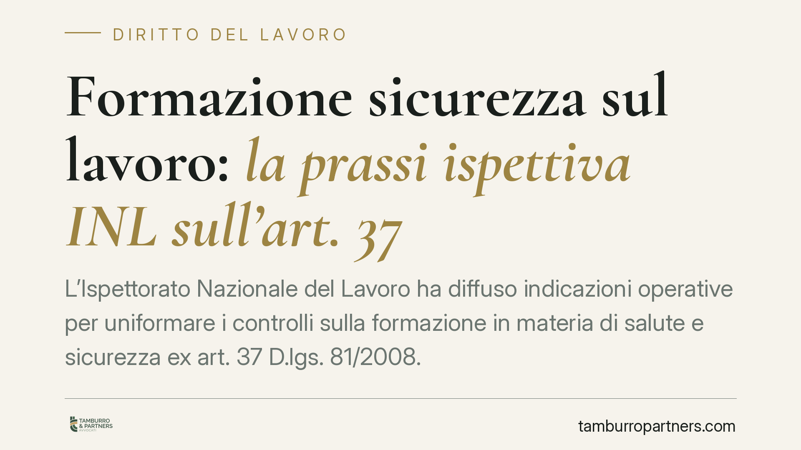

Formazione sicurezza sul lavoro: la prassi ispettiva INL sull'art. 37
L'Ispettorato Nazionale del Lavoro ha diffuso indicazioni operative per uniformare i controlli sulla formazione in materia di salute e sicurezza ex art. 37 D.lgs. 81/2008. Il tema riguarda ogni datore di lavoro: una formazione carente non è solo un vizio formale, ma può incidere sulla responsabilità penale in caso di infortunio.

Il contesto
La formazione dei lavoratori resta uno dei punti più presidiati nelle verifiche ispettive. L'INL ha fornito al proprio personale indicazioni volte a garantire uniformità applicativa nell'accertamento degli obblighi formativi previsti dall'art. 37 del D.lgs. 81/2008.
Una precisazione doverosa: al momento della redazione non è stato possibile identificare con certezza il numero di protocollo e la data della nota INL di riferimento. Trattiamo quindi il contenuto come prassi ispettiva in via di consolidamento, invitando il lettore a verificare l'atto ufficiale presso i canali dell'Ispettorato prima di assumere decisioni operative.
Inquadramento normativo
L'art. 37 D.lgs. 81/2008 impone al datore di lavoro di assicurare a ciascun lavoratore una formazione sufficiente e adeguata in materia di salute e sicurezza, con specifico riferimento ai rischi della mansione.
La disciplina va letta per figure distinte:
- Lavoratori: formazione generale e specifica secondo il livello di rischio dell'attività (art. 37, comma 2);
- Dirigenti: formazione adeguata e specifica alle funzioni, ex art. 37, comma 7;
- Preposti: la formazione è oggi regolata dal comma 7-bis, introdotto dal DL 146/2021 (conv. L. 215/2021), che ha rafforzato il ruolo del preposto prevedendo un aggiornamento con cadenza almeno biennale.
Sul piano dei contenuti e della durata, il riferimento storico sono gli Accordi Stato-Regioni (in particolare quello del 21 dicembre 2011 e successivi). Il quadro è però in evoluzione: lo stesso DL 146/2021 ha modificato l'art. 37, comma 2, prevedendo l'adozione di un Accordo unico che riordini e aggiorni durata, contenuti e modalità della formazione. Sullo stato di adozione di tale Accordo invitiamo a una verifica puntuale, trattandosi di dato soggetto ad aggiornamento.
Cosa verificano gli ispettori
Le indicazioni mirano a rendere omogeneo l'accertamento. In sintesi, il controllo si concentra su:
- l'avvenuto completamento della formazione generale, specifica e dell'aggiornamento periodico;
- la coerenza tra formazione erogata e rischi effettivi della mansione;
- la tracciabilità documentale (attestati, registri, programmi, qualifica dei formatori);
- il corretto assolvimento degli obblighi distinti per dirigenti e preposti.
Un punto che merita attenzione: anche quando il corso è affidato a soggetti terzi (enti di formazione, consulenti), la responsabilità dell'adeguatezza del percorso resta in capo al datore di lavoro. L'esternalizzazione non trasferisce l'obbligo.
Il nesso con la responsabilità in caso di infortunio
La formazione non è un adempimento burocratico. La giurisprudenza di legittimità ha più volte affermato che la carenza o l'inadeguatezza della formazione può integrare la colpa specifica del datore di lavoro quando concorre a determinare l'infortunio. In diverse pronunce la Cassazione penale ha ritenuto che una formazione meramente documentale o generica non soddisfa il requisito di «sufficiente e adeguata» richiesto dalla norma, e che il datore non può invocare l'esperienza del lavoratore per colmare il deficit formativo.
Il giudizio di adeguatezza, in altre parole, è sostanziale: non conta solo l'esistenza dell'attestato, ma la reale idoneità del percorso rispetto ai rischi concreti della mansione.
Implicazioni pratiche
Per il datore di lavoro il messaggio è duplice. Sul fronte amministrativo, l'omessa formazione è presidiata da sanzione penale ai sensi dell'art. 55 D.lgs. 81/2008. Sul fronte civile e penale, una formazione carente può aggravare la posizione datoriale in sede di accertamento delle responsabilità per infortunio.
La formazione va inoltre coordinata con l'attività del RSPP e con la valutazione dei rischi: il programma formativo dovrebbe discendere direttamente dal DVR, non essere un modulo standard sganciato dalla realtà aziendale.
Cosa fare in concreto
- Verificate lo stato della formazione per ogni lavoratore, dirigente e preposto, controllando anche le scadenze degli aggiornamenti periodici.
- Allineate i contenuti formativi al DVR: la formazione deve riflettere i rischi effettivi delle mansioni, non un modello generico.
- Controllate la qualifica dei formatori e la tracciabilità documentale (programmi, registri presenze, attestati).
- Non deleghiate la verifica di adeguatezza: anche con corsi affidati a terzi, valutate internamente che il percorso copra realmente i rischi aziendali.
- Monitorate l'evoluzione normativa sull'Accordo unico ex art. 37, comma 2, per aggiornare tempestivamente i piani formativi.
---
Contributo informativo a cura di Tamburro & Partners - Avv. Giuseppe Tamburro. Non costituisce parere legale.
Ogni storia di lavoro ha i suoi tempi.
Se gestisci HR e vuoi un confronto su contenzioso, ispezioni o licenziamenti, scrivi allo studio. Ti rispondiamo entro un giorno lavorativo.